Home |
About OMLAB |
Personnel |
Software, Models, & Data |
Reports & Teaching |
The "Editorial Page" |
Contact Us
Louis F. Dell'Osso, PhD When I'm not thinking about Ocular Motility
Bird Dogs (Brittany) |
Hunting Field & Water Trials |
Upland Bird & Waterfowl Hunting |
Deer Hunting (Bow, Shotgun, & Rifle) |
Model Trains |
Other Pleasures
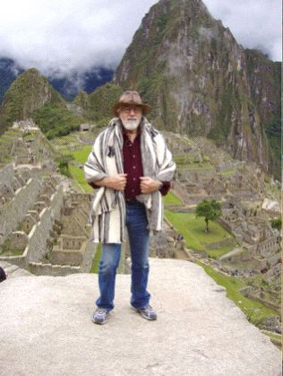 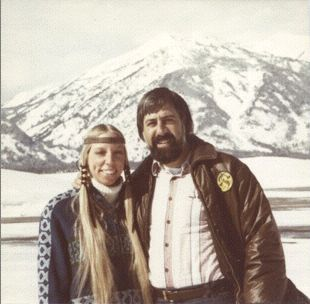 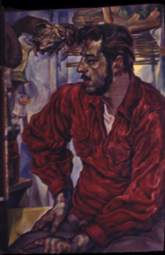
Machu Pichu, 2003 <==> Grand Teton 1977 <==> University of Wyoming, circa 1965
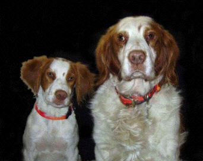 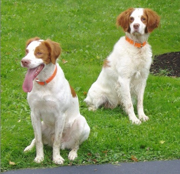
Lakota & Copper - Xmas 2004 <==> Lakota & Copper - Fall 2005
Dogs are our link to paradise. They don't know evil or jealousy or discontent. To sit with a dog on a hillside on a glorious afternoon is to be back in Eden, where doing nothing was not boring--it was peace. -Milan Kundera
Bird Dogs (Brittany)
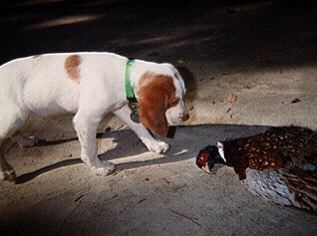 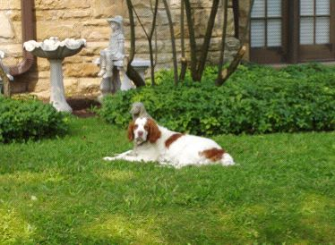
Copper (10 weeks) <==> Copper (9 years)
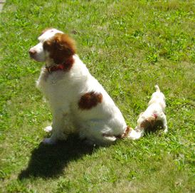 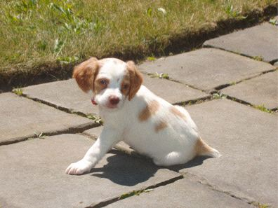
Copper and Lakota (7 weeks) <==> Lakota
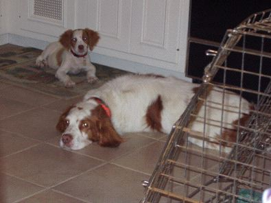
Lakota (10 weeks) and Copper
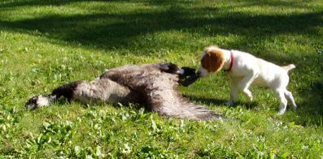 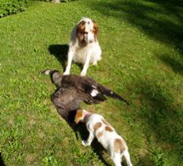
Lakota: "Gee, these things are BIG!" <==> Copper: "Get away from my Goose"
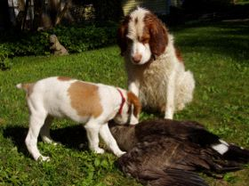 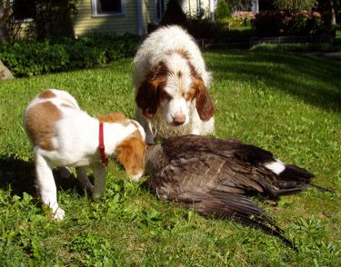
"Did you REALLY fetch this?" <==> "I think it moved!"
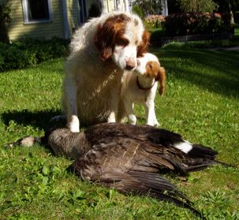 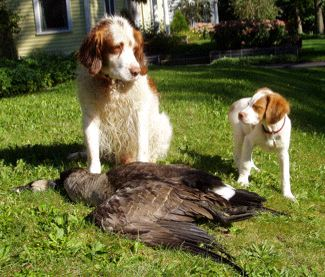
"Congratulations big brother" <==> "I bet I could fetch it too" Copper thinking: "Well, at least he has spunk"
Top of page
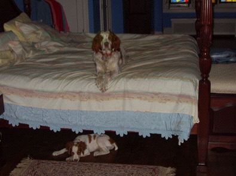
"He can't reach me here"
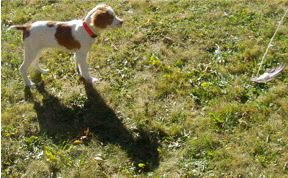 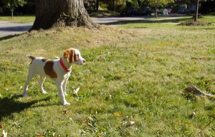
Lakota (16 weekss) begins his training
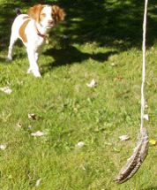 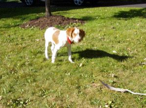 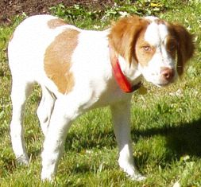
Pure Intensity on Point
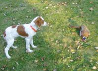
Lakota (4 months) Training with the Real Deal
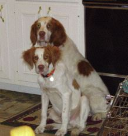 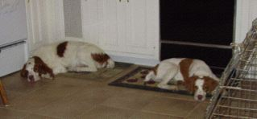 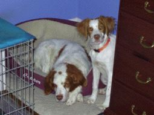
Copper and Lakota (5 months) Relaxing at Home
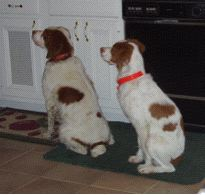 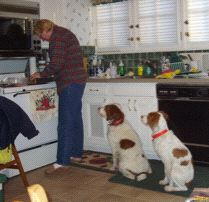 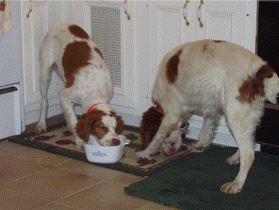
Copper and Lakota (7 months) What has their undivided attention? <==> Could it be ... love? <==> Yes, love of food!
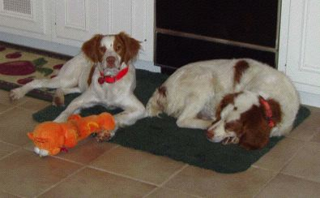 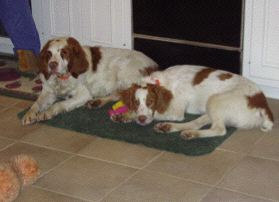
Relaxing after Dinner: Lakota and Copper <==> Copper and Lakota
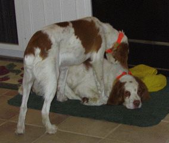 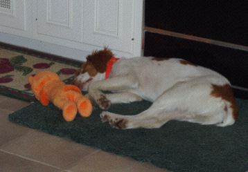
Lakota Grooming Copper <==> Lakota, after a hard day
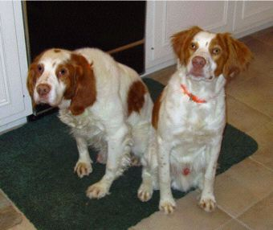 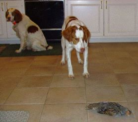
Copper (9.5 yrs) Lakota (8 mos) <==> Lakota pointing Copper's Hun
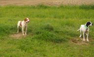 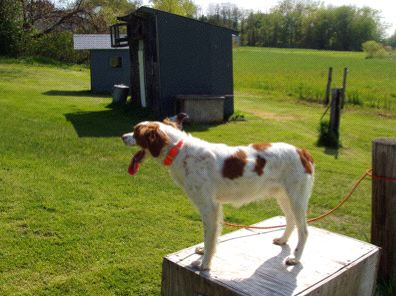 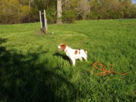
Lakota (11 mos) at Bird Dog Boot Camp: On the Chain Gang <==> Whoa! <==> Whoa!
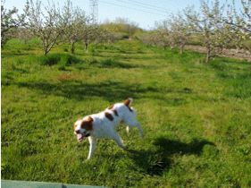 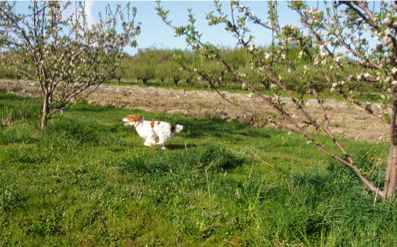
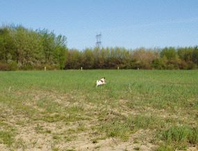 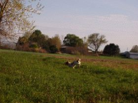 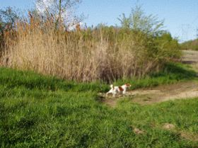
Lakota (11 mos) at Bird Dog Boot Camp: Flying Low
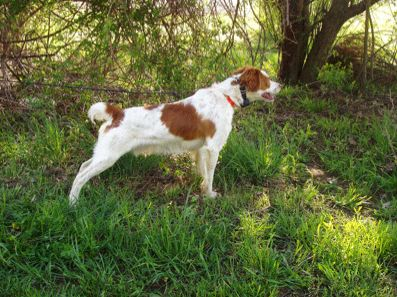 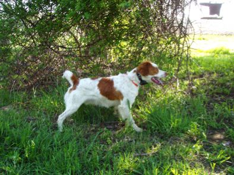 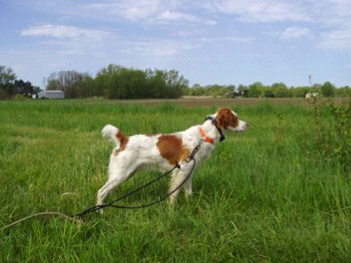 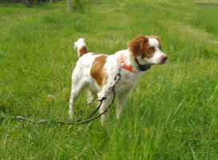
Lakota (11 mos) at Bird Dog Boot Camp: Pointing Birds
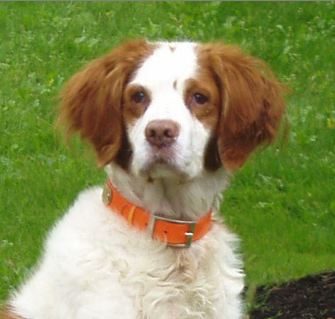
Copper (7/4/95 - 10/21/08)
Located and pointed every bird in the field and retrieved every bird shot over him. A great hunting dog, winning field-trial contestant and loyal companion with a vocabulary of over 35 words and many hand and whistle signals.
Top of page
Bird Dogs (Brittany) |
Hunting Field & Water Trials |
Upland Bird & Waterfowl Hunting |
Deer Hunting (Bow, Shotgun, & Rifle) |
Model Trains |
Other Pleasures
Home |
About OMLAB |
Personnel |
Software, Models, & Data |
Reports & Teaching |
The "Editorial Page" |
Contact Us